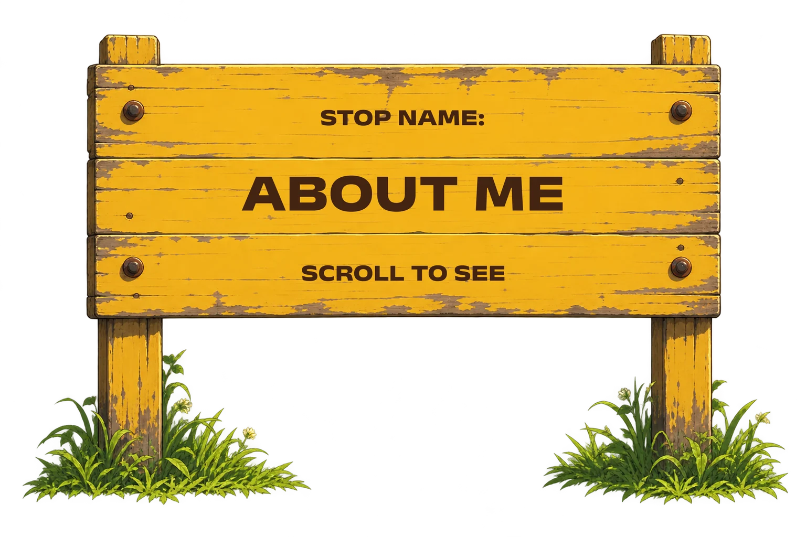
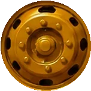
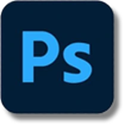
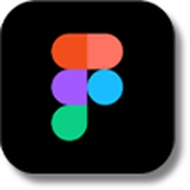
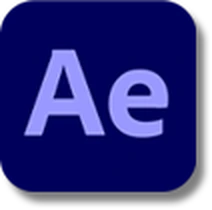
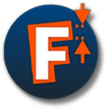
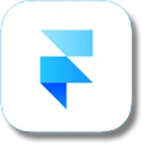
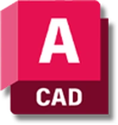

About Ashfaque Salahudeen
Hello, I am Ashfaque Salahudeen, a visual designer with roots in Lakshadweep and Kerala. A background in architecture and a curiosity that takes me across branding, typography, visual communication and experiences.
Education
IIT Guwahati, M.Des 2025–27. MANIT Bhopal, B.Arch 2020–25. Kendriya Vidyalaya, H.Sec 2019. Sec 2017.
Experience
Cafe Naddu's LLP, creative designer and marketing consultant, 2023–2025. Billboards, architectural and design intern, 2024. MoHUA and AICTE, student intern, 2022.
Positions of responsibility
Ishanya KTG (2026) creatives head. Manit Onam (2022–24) event and design head. 65th HUDCO (2022–23) team coordinator. Spirit ITG (2026) creatives core team. Maffick MANIT (2023) design executive.
Achievements
Top 25 photography, Mission Amrit Sarovar (National) 2022. Jurors' Choice Award, 65th HUDCO Trophy, NASA India 2023. Special Mention Award, 64th HUDCO Trophy, NASA India 2022.
Toolbox
Photoshop, Illustrator, Figma, Premiere Pro, After Effects, InDesign and more.




Adobe Photoshop- Adobe Illustrator

Figma- Adobe Premiere Pro

Adobe After Effects- Adobe InDesign

FontLab
Framer- Microsoft Office
- Miro
- Procreate

AutoCAD